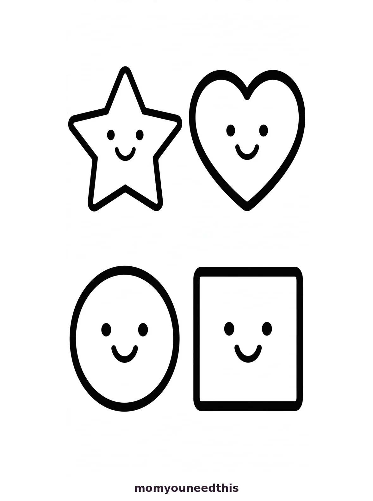
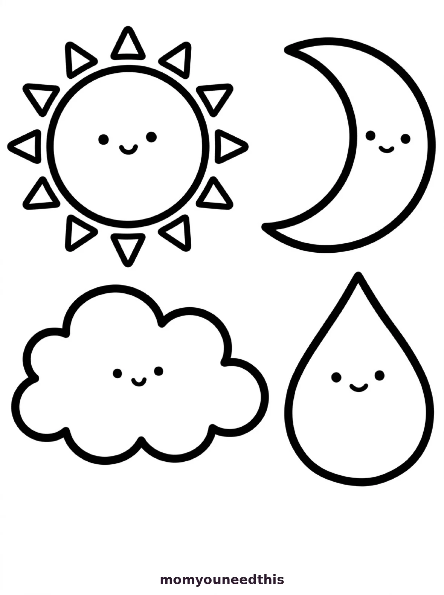
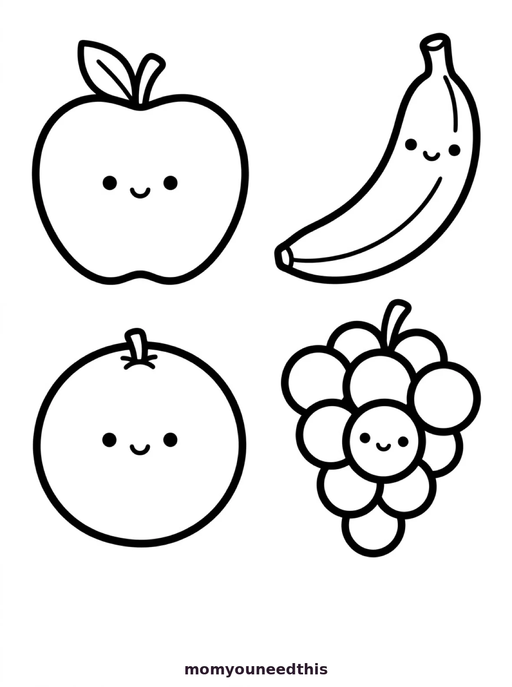
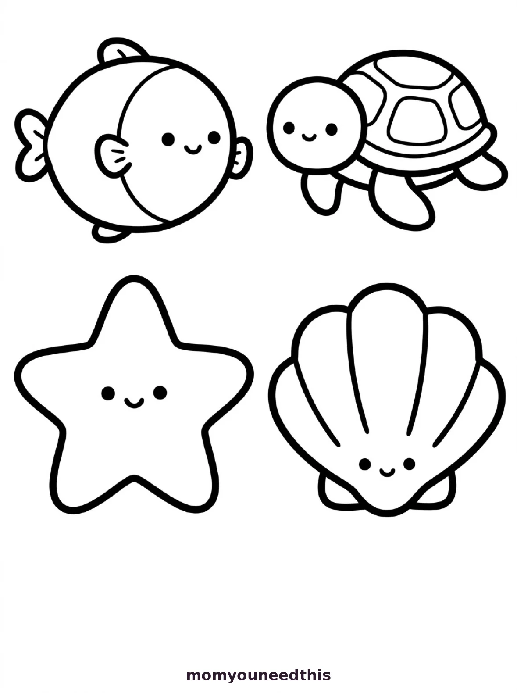

Free Coloring Pages for Toddlers
Looking for coloring pages for toddlers that little hands can actually finish? Start with the four free sheets right on this page — smiling shapes, first weather, first fruits, and ocean friends — or browse the gallery of free toddler coloring pages below — tap any picture to open its theme page and download its printable. No signup needed, just print at home and hand over the crayons!
Last updated:
Quick Answer
Yes — this page has free coloring pages for toddlers with bold outlines and big spaces made for little hands. Print the smiling-shapes sheet below — a star, a heart, an oval, and a square — or pick a theme from the gallery of toddler coloring pages underneath it. No signup, no cost, no mess beyond crayons.
At a Glance
- Ages: 1–3
- Pages: 4 printables on this page + 9 theme galleries
- Format: Print at home, letter size
- Cost: Free, no signup
- Supplies: Crayons or markers
- Time: 5–15 minutes
⭐ Free Coloring Pages for Toddlers — 4 Big-Picture Sheets

🎨 Download Your Free Toddler Coloring Page
This sheet was made for first coloring sessions: four big smiling shapes — a star, a heart, an oval, and a square — with thick outlines and wide-open middles that are easy to aim a crayon at. Download it, print it on letter-size paper, and color it together.
⬇️ Download Free Coloring Page 🖨️ Print🎁 Free printable for toddlers (ages 1–3)

🌦️ First Weather
A smiling sun, crescent moon, puffy cloud, and one big raindrop — four first-weather pictures with the same thick outlines and wide-open middles.
⬇️ Download Free Coloring Page 🖨️ Print
🍎 First Fruits
A smiling apple, banana, orange, and a bunch of grapes — name each fruit together first, then color it in.
⬇️ Download Free Coloring Page 🖨️ Print
🐠 Ocean Friends
A round smiling fish, a sea turtle, a starfish, and a seashell — gentle first ocean pictures for little hands.
⬇️ Download Free Coloring Page 🖨️ Print🖍️ Coloring Pages for Toddlers — Pick a Theme
Tap any picture to open its theme page and download more free toddler coloring pages.


🧠 Why Coloring Is Great for Toddlers
Coloring pages for toddlers are grip practice in disguise. Holding a crayon on purpose, pressing it to paper, and watching a mark appear teaches cause and effect — and builds the hand muscles kids need later for writing, buttoning coats, and using scissors.
It also builds color words. When you say "You're using the blue crayon!" or "Can you find the red one?" you're turning a quiet activity into language practice. Toddlers learn color names fastest when the words come with something they can see and hold.
And coloring is calm focus practice. A toddler who sits with a page for even five minutes is learning to stick with one activity — a skill that grows with every session. There's no right or wrong result, so there's no frustration either. The page always ends up finished, and the child always feels proud.
🎨 What Makes a Good Toddler Coloring Page
Coloring pages for toddlers follow different rules from pages made for older kids. Thin lines, tiny details, and cramped spaces frustrate little hands. Good toddler coloring pages follow three rules instead:
- Bold, thick outlines — easy to see, easy to stay near, and forgiving when the crayon wanders.
- Big, simple shapes — one clear subject (an animal, a flower, a vehicle) with lots of open space to fill.
- Not too much on the page — one picture beats a busy scene. Toddlers finish one picture and feel done; a crowded page feels endless.
The smiling-shapes sheet on this page follows all three: four big, friendly shapes — a star, a heart, an oval, and a square — each with thick outlines and a wide-open middle, designed so a 2-year-old's scribbles still look like a finished picture.
✏️ Coloring Tips for Parents
- Let them scribble. Staying in the lines comes later. At this age, the goal is grip, color, and joy — not neatness.
- Name the colors out loud. "You picked green!" is the easiest color lesson there is.
- Use chunky crayons. Fat crayons are easier for little hands to grip than skinny ones, and they break less.
- Tape the page down. A strip of tape at each corner keeps the paper from sliding around while they color.
- Display the finished page. Stick it on the fridge or a wall at their height. Seeing their work displayed is the biggest motivator to color again.
- Color alongside them. Toddlers copy what they see. Coloring your own page next to them teaches more than any instruction.
🧼 Supplies & a Mess-Free Coloring Setup
You don't need a craft store run. Everything on this list is cheap, washable, or already in your kitchen:
- Chunky crayons — fat crayons are easier for little hands to grip, and they snap less than skinny ones.
- Washable markers — save these for toddlers who are past the everything-in-the-mouth stage.
- Thick paper or cardstock — regular printer paper is fine for crayons; thicker paper stops markers bleeding through onto the table.
- Painter's tape — one strip on each corner stops the page sliding around mid-scribble.
- A tray or rimmed cookie sheet — color on it and runaway crayons stay contained.
- A smock or old t-shirt — coloring stays on the paper more often than on clothes, but not always.
Print two copies of the sheet — one for your toddler, one for you. Toddlers copy what they see, and coloring side by side teaches more than any instruction. Keep a few toddler coloring pages printed and ready in a drawer, and you always have a five-minute activity in reach.
🖍️ How To Use This Page
- Print the smiling-shapes sheet — use the Download or Print button under its picture at the top of this page. Letter-size paper works perfectly.
- Set up in two minutes — tape the corners down, put out chunky crayons, smock on.
- Want more toddler coloring pages? Tap any picture in the gallery to open its theme page, then tap Download or Print there.
- Color together with crayons or markers, then display the favorites on the fridge at toddler height.
🔗 More Free Printables You’ll Love
- ✏️ Drawing Tutorials for Kids 76 step-by-step tutorials — animals, Christmas, and more, each with a free printable.
- 🎨 Paint by Numbers for Kids 8 free color-by-number sheets — match the number, fill the color, reveal the picture.
- 🎁 All Free Resources Browse every free printable, tool, and activity on the site.
- 🐾 Animal Matching Activities Match animals to their pictures — a first matching game for toddlers.
- 🔲 Square Coloring Pages Big, simple square shapes for first coloring — an easy next step after these toddler pages.
❓ Toddler Coloring Pages FAQ
Are these coloring pages for toddlers really free?
Yes — the four coloring pages on this page are free original printables from MomYouNeedThis, and every theme in the gallery is free too. Nothing here costs anything, and there's no signup.
What ages are these coloring pages for?
They are perfect for toddlers, preschoolers, and young kids. Choose simpler designs for little ones and more detailed pages for older kids.
How do I print a coloring page?
For any sheet on this page, tap Download or Print under its picture. For a theme, tap any picture in the gallery to open its theme page, then tap Download or Print there. Regular letter-size paper works perfectly. The print button opens the full-size page in a new tab if you prefer to print from there.
What age can toddlers start coloring?
Most toddlers can start coloring around 12–18 months, once they can hold a crayon and make marks on paper. At first it's all scribbles — and that's exactly right. Neat coloring inside the lines comes much later, usually around age 3–4.
Are crayons or markers better for toddlers?
Crayons are the safer first choice — they don't stain, they don't dry out if left uncapped, and chunky crayons are easier for little hands to grip. Washable markers work too once your toddler stops putting everything in their mouth.
How long will my toddler color?
Five to fifteen minutes is completely normal for a toddler. Short sessions are not a failure — they're how focus builds. If your child colors for five minutes and walks away happy, that's a win.